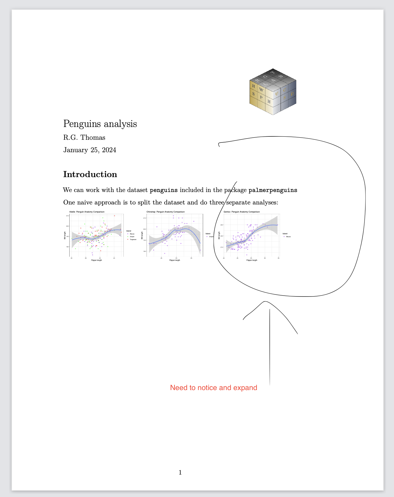

Simple process for sharing Rmarkdown code via Docker
![]()

1 Introduction
Lets assume you have an rmarkdown Rmd file, say peng.Rmd, that you’re written to analyze some data. You now want to share the code with a colleague, we’ll call him Joe. How to proceed?
The simplest option is simply to send Joe the “rmd” file containing the code via the most convenient method (e.g. email/text/slack/discord/github/USB drive etc.)
The next step will be for the Joe to ( attempt to ) load and run the code. Typically he would do this with either using Rstudio.app to open the file and knit it, render it from the command line with the command:
> R -e "render('peng.Rmd')"Sometimes this approach works, and all is well. Joe can add comments or expand the code and reply to you. Frequently, however, this naive process will fail for any number of reasons. Ideally to facilitate reproducibility Joe will have as similar a computing environment as you, the original developer. This can be difficult to achieve, especially given the dynamic nature of open source software. For example Joe may have an outdated version of R installed on his workstation, or his R environment may be missing a necessary package. Additiional potential problems include: the required package may be present but its the wrong version, the program may need to source an additional file thats missing, or the program load some data that it can’t find on Joe’s machine.
All of these problems go away if instead of sending the program as a standalone text file you send it as a docker image. In this post we’ll walk through the process of dockerizing the R code.
Assume a simple Rmd file like this:
---
title: "Penguins analysis"
author: "R.G. Thomas"
date: "`r format(Sys.time(), '%B %d, %Y')`"
fontsize: 11pt
geometry: "left=3cm,right=5cm,top=2cm,bottom=2cm"
output:
pdf_document:
keep_tex: true
includes:
in_header: "preamble.tex"
---
```{r include=F, echo=F}
library(pacman)
p_load(palmerpenguins, tidyverse, knitr)
opts_chunk$set(
warning = FALSE, message = FALSE, echo = FALSE, results = "asis", dev = "pdf"
)
```
# Introduction
We can work with the dataset `penguins` included in the package `palmerpenguins`.
```{r }
library(palmerpenguins)
```
One naive approach is to split the dataset and do three separate
analyses:
```{r }
df1 <- split(penguins, penguins$species)
foo <- function(df, z) {
df |> ggplot(aes(x = bill_length_mm, y = flipper_length_mm)) +
geom_point(aes(color = island), alpha = .5) +
geom_smooth() +
scale_color_manual(values = c("purple", "green", "red")) +
theme_bw() +
labs(
title = paste(z, " Penguin Anatomy Comparison"), x = "Flipper length",
y = "Bill length", color = "Island"
)
plotfile_name <- paste0(z, ".pdf")
ggsave(plotfile_name)
cat(paste0("\\includegraphics[height=3cm]{", plotfile_name, "}"), "\n")
cat("\\vspace{1cm}", "\n")
}
bar <- df1 |> map2(names(df1), foo)
```The Rmd file runs cleanly on our machine and generates the the report on the following page. However, we note that the third plot needs additional examination and want to relay the program to our colleague Joe for further analyis.

3 Docker approach
Alternatively, consider the “Docker” approach.
Before sending peng.Rmd to Joe we’ll dockerize it.
- Prepare a work directory: penguins. We want to send Joe a container that has R and all the preliminaries taken care of so that all he has to do is
Here is the docker file
FROM rocker/verse:4
RUN apt update
RUN apt install vim -y
RUN R -e "install.packages('pacman')"
RUN R -e "install.packages('palmerpenguins')"
RUN R -e "install.packages('tidyverse')"
RUN R -e "install.packages('knitr')"
RUN R -e "install.packages('rmarkdown')"
RUN tlmgr init-usertree
RUN tlmgr update --self --all
RUN tlmgr install fancyhdr adjustbox geometry titling
RUN addgroup --system joe && adduser --system --ingroup joe joe
RUN chmod -R 0777 '/usr/local/lib/R/site-library'
RUN chown joe:joe -R /home/joe
USER joe
WORKDIR /home/joe
RUN mkdir -p /home/joe/shr
RUN mkdir -p /home/joe/output
COPY /preamble.tex /home/joe/shr
# COPY /.Rprofile /home/joe/shr
COPY sudoku.png /home/joe/shr
COPY peng.Rmd /home/joe/shr
CMD ["/bin/bash"]run docker
docker build -t rgt47/penguin_review --platform=linux/amd64 .
docker push rgt47/peng_reviewrelay image to Joe
docker push rgt47/peng_reviewor
docker save rgt47/peng_review | gzip > peng_review_trans.tgz
docker load -i peng_review_trans.tgz> docker pull rgt47/penguin_review
> droot="$PWD"/output docker run -it --rm --platform linux/x86_64 \
-v $droot:/home/joe/output peng_review
> cd output
> library(rmarkdown); render('../shr/peng.Rmd')Important to include the association between the /home/joe/output directory in the container with the output directory on the local workstation. Thats where the results of the analysis will be saved.
> R -e "library(rmarkdown); render('peng.Rmd')"and if he wants to edit peng.Rmd
> vim peng.Rmd
\usepackage[export]{adjustbox}
\usepackage{fancyhdr}
\usepackage{titling}
\pagestyle{fancy}
\pretitle{
\begin{flushright}
\includegraphics[width=3cm,valign=c]{sudoku.png}\\
\end{flushright}
\begin{flushleft} \LARGE }
\posttitle{\par\end{flushleft}\vskip 0.5em}
\predate{\begin{flushleft}\large}
\postdate{\par\end{flushleft}}
\preauthor{\begin{flushleft}\large}
\postauthor{\par\end{flushleft}}
\fancyfoot[L]{\currfilename} %put date in header
\fancyfoot[R]{\includegraphics[width=.8cm]{sudoku.png}}
\fancyhead[L]{\today} %put current file in footer4 REFERENCES
Reuse
Citation
@online{(ryy) glenn thomas2024,
author = {(Ryy) Glenn Thomas, Ronald},
title = {Simple Process for Sharing {Rmarkdown} Code via {Docker}},
date = {2024-02-24},
url = {https://focusonr.org/posts/share_rmd_code_via_docker},
langid = {en}
}